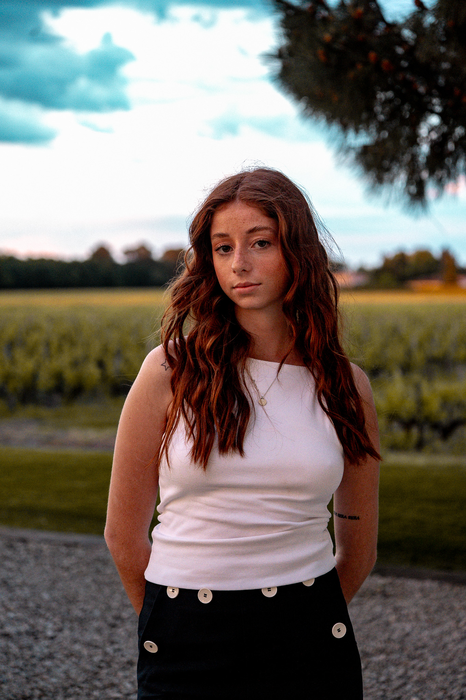

Étudiante en communication,évènnementiel et relation presse. Mes passions et travails nourrit mon ouverture au monde.
Je suis actuellement étudiant en deuxième année de communication à l’EFAP Bordeaux. Passionné par l’écriture, le cinéma et la musique, j’aime explorer des voies créatives communiquer et se connecter avec les gens. Parallèlement à mes études, je travaille pour le Service traiteur UBB, où j’ai acquis une expérience précieuse dans l’industrie de l’événementiel et a développé de solides compétences en organisation et en travail d’équipe.
Je suis aussi un athlète, le sport me pousse constamment à me dépasser et m’aide à rester disciplinée, déterminée et résiliente tant dans mes études que dans ma vie quotidienne. Mes expériences professionnelles en communication et relations publiques m’ont permis d’approfondir ma compréhension du paysage médiatique, le renforcement de mes compétences interpersonnelles et l’élargissement de ma connaissance du monde professionnel.